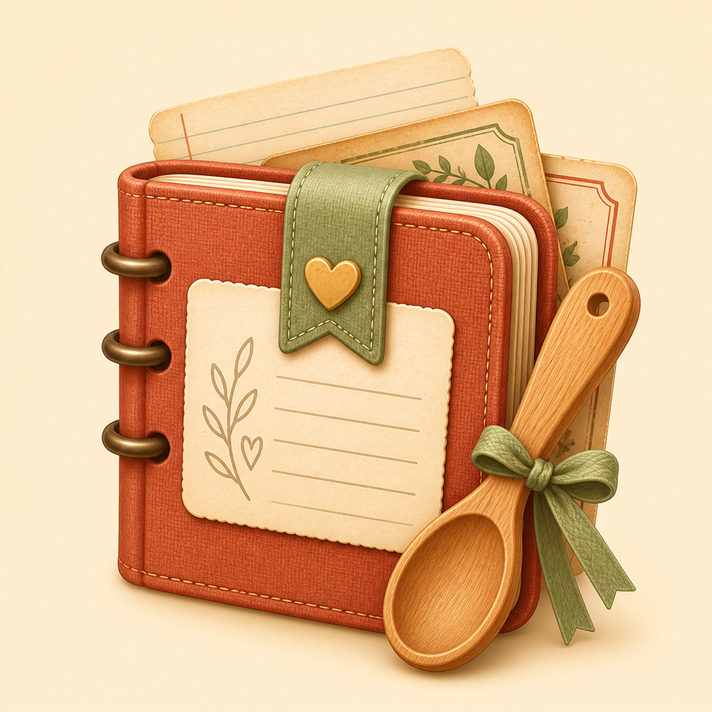
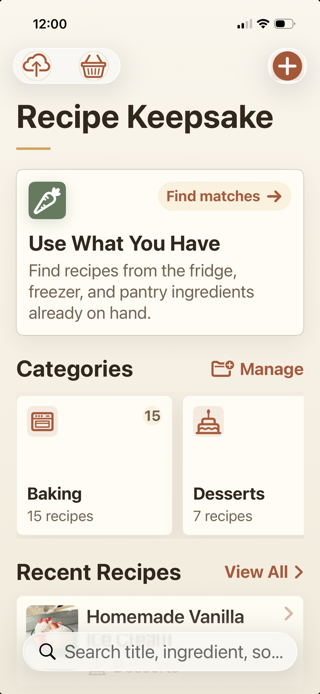
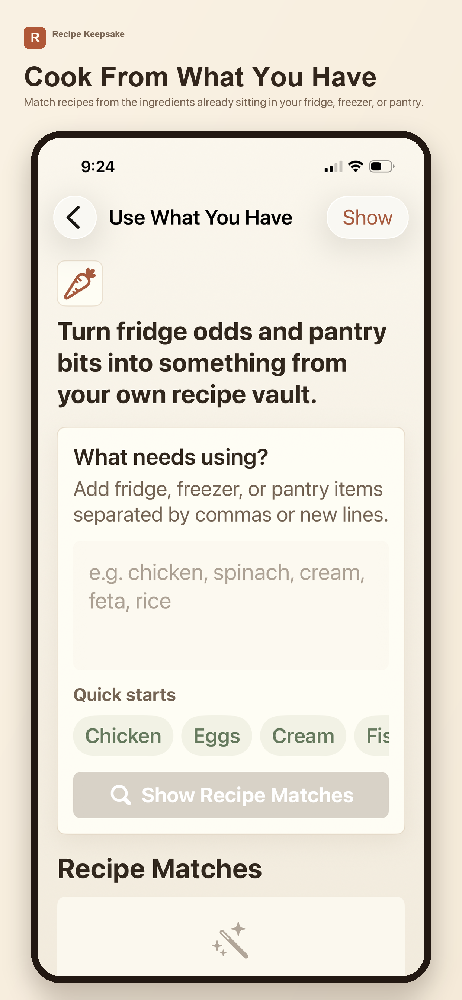
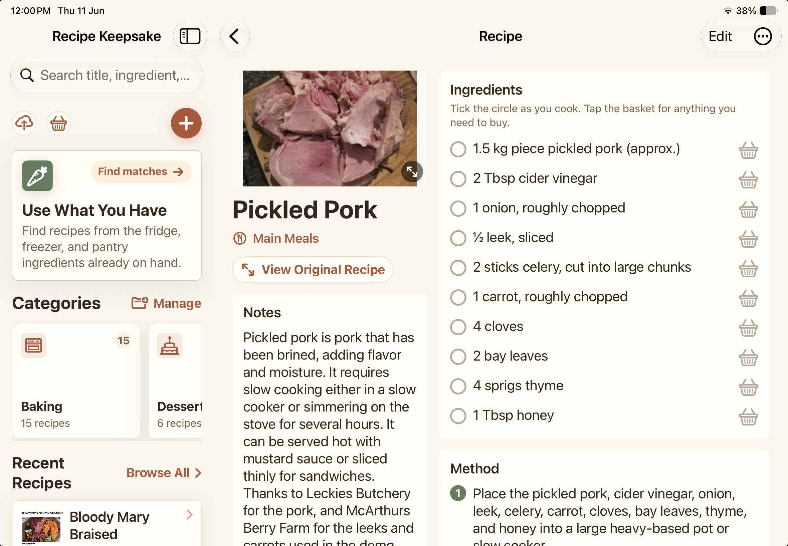
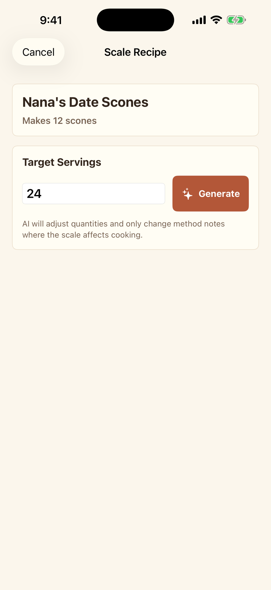
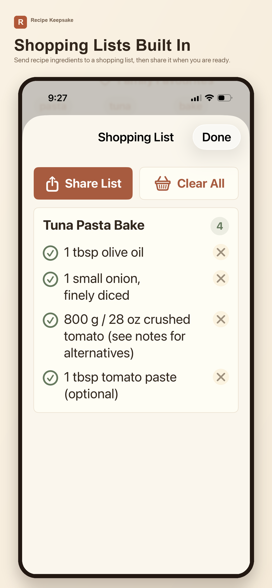

Capture recipes
Add recipes manually, scan a photo, import a file, paste text, or save web recipes.

Recipe KeepsakeFor iPhone and iPad
Save family recipes, photos, PDFs, screenshots, handwritten notes, and web recipes in one warm, searchable place.
Free to start, including search, iCloud sync, shopping lists, Use What You Have, and 10 included AI uses.


Built for real homes
Recipe Keepsake is for the family cards, cookbook photos, screenshots from friends, PDFs, web recipes, and handwritten notes you do not want to lose.
Add recipes manually, scan a photo, import a file, paste text, or save web recipes.
Store the original file or image with the clean recipe card, so the source is always there.
Search recipe titles, ingredients, sources, categories, and tags across your collection.
Build a shopping list inside the app and share it to Notes, Messages, email, or wherever you plan groceries.
Enter ingredients already in the kitchen and find matching recipes from your own vault.
Keep recipes available across iPhone and iPad with private iCloud sync.
iPad friendly
Browse, open a recipe, check ingredients, view the original source, and plan your shopping list with room to breathe.

Recipe Keepsake Pro
Every user starts with 10 included AI uses. Upgrade when you want unlimited AI tools for cleaning scans, generating recipes, scaling recipes, and speeding up larger imports.


Simple pricing
Everything you need to preserve your recipe collection is free. Pro unlocks unlimited AI and power-user import tools.
Free
Always free
Pro
Pro
See in-app for pricing
Trustworthy by design
Your saved recipe collection is stored on your device and synced with your private iCloud account when iCloud is enabled. AI features only process the recipe content you choose to use with those tools.